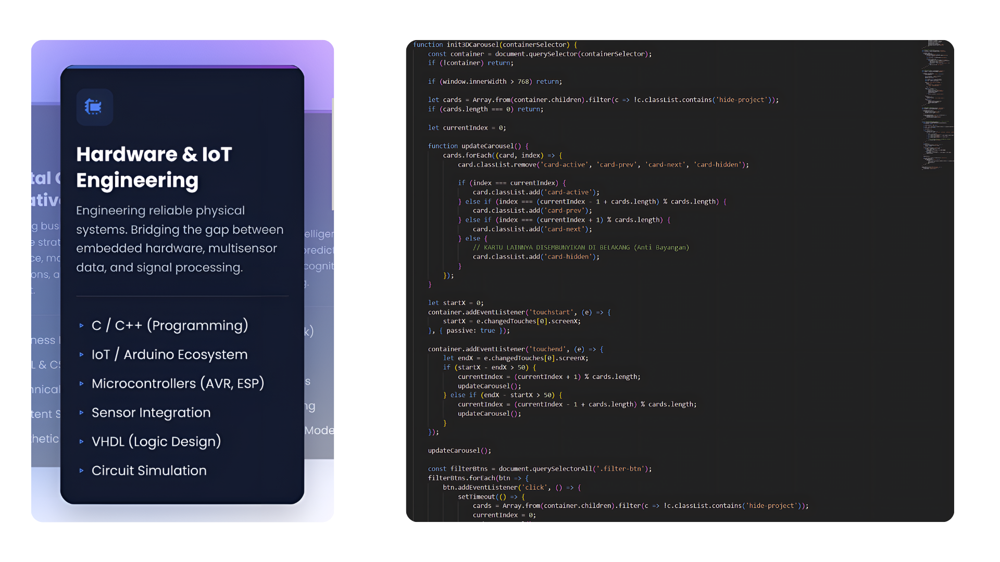
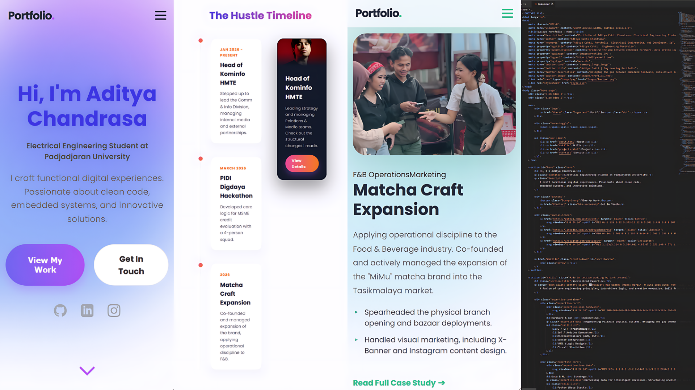

The Objective
A standard CV can only tell so much. I needed a dynamic, interactive space to truly showcase the intersection of my engineering background, data analytics logic, and business operations. Instead of relying on generic templates or rigid CMS platforms, I decided to architect and code my personal portfolio entirely from scratch. The goal was to create a seamless, premium user experience that feels less like a document and more like a modern application.
Tech Stack & Architecture
To maintain absolute control over the performance and aesthetics, I opted for a raw tech stack:
- Structure & Logic: Built with semantic HTML5 and Vanilla JavaScript. I utilized Intersection Observers for smooth scroll-triggered animations and dynamic DOM manipulation for the live project filtering system.
- Styling & UI: Custom CSS3 with a heavy focus on modern design trends. The architecture transitioned into a sleek, dark-mode SaaS dashboard style, utilizing complex grid/flexbox layouts for structured data presentation.
- Backend Integration: Integrated Web3Forms with AJAX fetch requests to handle the contact form seamlessly without page reloads.

Under the hood: Raw DOM manipulation and layout styling handled entirely without external frameworks.
Overcoming The Mobile Responsiveness Challenge
Designing for desktop was only half the battle. The real engineering challenge was translating complex UI components into a flawless mobile experience. It required patience and extreme attention to detail.
- Adaptive Grids: The complex Bento Grid layouts (used in the project archives) were engineered to collapse gracefully into single-column flows on mobile, ensuring readability without horizontal scrolling issues.
- Layout Debugging: I spent hours debugging horizontal scroll leaks, fixing Z-index overlaps, and recalculating viewport widths (
vw) to ensure the UI elements blended seamlessly into the edge of the screen.

Mobile translation: Ensuring complex grid layouts collapse gracefully for smaller viewports.
The Result
The final output is a highly optimized, fully responsive digital portfolio deployed via Vercel. It serves as a centralized hub for all my micro-hustles, hardware prototypes, and organizational achievements. More importantly, building this solidified my understanding of front-end logic, proving that an engineering mindset can be applied perfectly to digital product design.